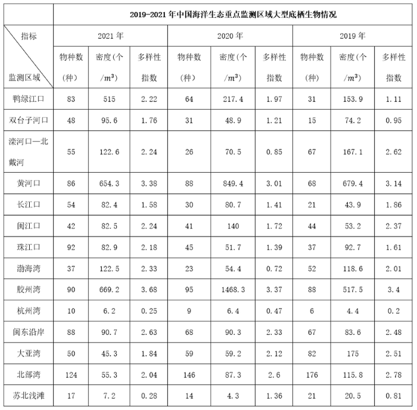
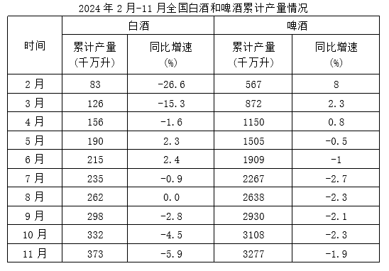
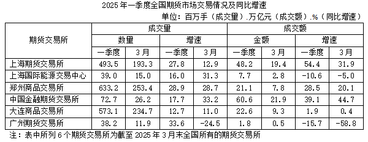
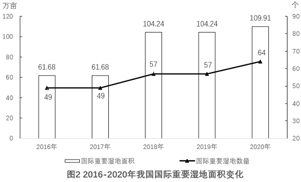
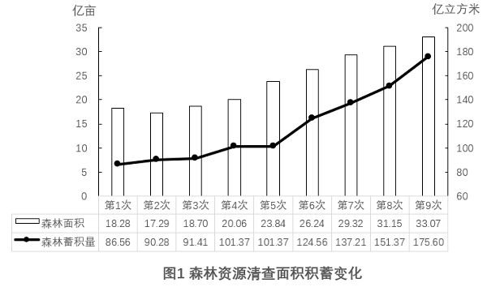
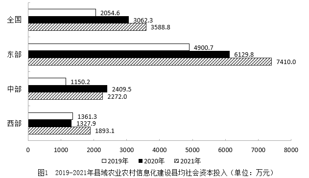
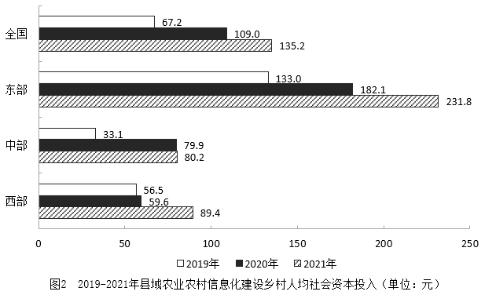
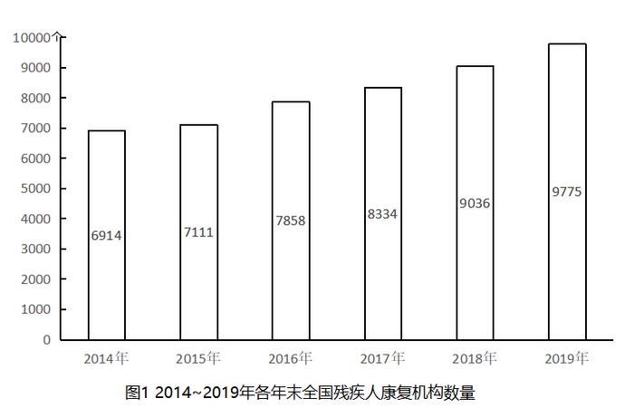
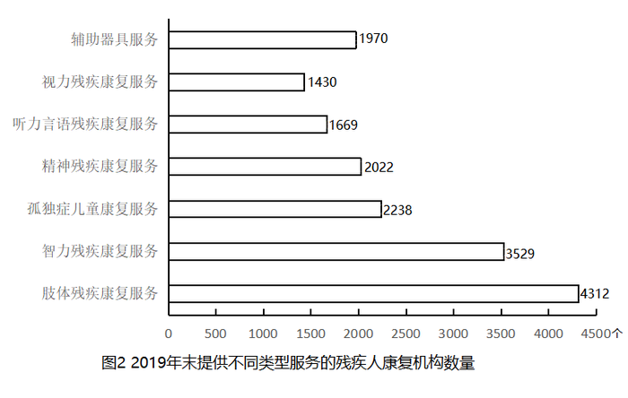

资料分析：低频特殊模型（混合/年均/间隔/容斥）核心错题 · 共 12 题
【题目编号/题号】 ZL011 (39-8)书本第 39 40 页
【考点标签】 年均增长率；统计表
【材料】（无文本材料，见题干配图）
【题干】
2019-2021年，珠江口大型底栖生物多样性指数年均增长（ ）。

【选项】
A16.4%
B17.7%
C18.1%
D35.3%
听课笔记 / 决策路径：
【题目编号/题号】 ZL012 (41-11)书本第 40 41 页
【考点标签】 混合增长率；统计表
【材料】（无文本材料，见题干配图）
【题干】

2024年上半年，中国医药保健品进出口贸易顺差（出口额-进口额）比上年同期：
【选项】
A下降了20%以上
B下降了不到20%
C上升了20%以上
D上升了不到20%
听课笔记 / 决策路径：
【题目编号/题号】 ZL016 (47-12)书本第 47 页
【考点标签】 混合增长率；统计表
【材料】（无文本材料，见题干配图）
【题干】
2024年3-11月，全国啤酒当期产量增长率高于累计增长率的有几个？

【选项】
A3
B4
C5
D6
听课笔记 / 决策路径：
【题目编号/题号】 ZL019 (48-17)书本第 48 页
【考点标签】 混合增长率；统计表
【材料】（无文本材料，见题干配图）
【题干】
2025年1~2月，上海期货交易所成交额同比增速在以下哪个范围内？

【选项】
A不到45%
B超过85%
C45%~65%之间
D65%~85%之间
听课笔记 / 决策路径：
【题目编号/题号】 ZL030 (80-7)书本第 80 页
【考点标签】 混合增长率；文字资料
【材料】
2023年3月，全国规模以上工业企业的工业机器人完成产量4.4万套，服务机器人完成产量70万套。2023年 1~3月全国规模以上工业企业的工业机器人累计完成产量10.4万套，服务机器人累计完成产量145万套。 2023年3月，我国机器人设备出口金额0.7亿美元，较上年增长110.3%，进口金额2.4亿美元，较上年增长 68.5%。2023年1~3月我国机器人设备累计出口金额1.9亿美元，较上年增长62.1%，累计进口金额6.9亿美元，较 上年增长55.1%。 2022年12月，全国规模以上工业企业的工业机器人完成产量4万套，服务机器人完成产量49.1万套。2022年 1~12月全国规模以上工业企业的工业机器人累计完成产量44.3万套，服务机器人累计完成产量645.8万套。 2022年12月，我国工业机器人设备出口金额0.5亿美元，进口金额1.8亿美元。2022年1~12月我国工业机器 人设备累计出口金额6.1亿美元，累计进口金额20亿美元。
【题干】
2023年一季度，我国机器人设备进出口贸易逆差比上年同期：
【选项】
A下降了不到30%
B下降了30%以上
C上升了不到30%
D上升了30%以上
听课笔记 / 决策路径：
【题目编号/题号】 ZL034 (85-6)书本第 85 页
【考点标签】 间隔增长率；文字资料
【材料】
2022年，全国软件和信息技术服务业规模以上企业超3.5万家，累计完成软件业务收入108126亿元，同比增 长11.2%，增速较上年同期回落6.5个百分点。 2022年，全国软件业利润总额12648亿元，同比增长5.7%，增速较上年同期回落1.9个百分点。软件业务出 口额524.1亿美元，同比增长3.0%，增速较上年同期回落5.8个百分点。其中，软件外包服务出口额同比增长 9.2%。 2022年，东部、中部、西部和东北地区分别完成软件业务收入88663亿元、5390亿元、11574亿元和2499亿 元，分别同比增长10.6%、16.9%、14.3%和8.7%。软件业务收入居前5名的北京、广东、江苏、山东、浙江共完 成收入74537亿元，占比较上年同期提高2.9个百分点。 2022年，全国15个副省级中心城市实现软件业务收入53419亿元，同比增长10.0%，增速较上年同期回落6.3 个百分点；实现利润总额6924亿元，同比增长2.4%，增速较上年同期回落2.1个百分点。
【题干】
2022年，全国软件和信息技术服务业规模以上企业累计完成软件业务收入约比2020年增长了：
【选项】
A16%
B23%
C29%
D31%
听课笔记 / 决策路径：
【题目编号/题号】 ZL073 (135-16)书本第 135 页
【考点标签】 间隔增长率；文字资料
【材料】
2021年，全国纺织品服装出口3155亿美元，同比增长8.4%。其中，纺织品出口1452.2亿美元，同比下降 5.6%，较2019年增长22.0%；服装出口1702.8亿美元，同比增长24.0%，较2019年增长16.0%。其中，针织服装 及衣着附件出口864.8亿美元，同比增长39.0%；梭织服装及衣着附件出口701.2亿美元，同比增长12.6%。 2021年，中国对美国、东盟、欧盟和日本的纺织品服装出口合计1724.9亿美元。其中，对美国出口额为 563.5亿美元，同比增长4.0%；向东盟十国出口纺织品服装491.2亿美元，同比增长24.9%；对欧盟27国出口纺织 品服装469.9亿美元，同比下降11.1%；对日本出口纺织品服装200.3亿美元，同比下降7.2%。 2021年，中国向全球出口纺织纱线138亿美元，出口织物667亿美元，分别同比增长41.5%和34.3%。纺织制 品当中，防疫类口罩出口额为129.5亿美元，出口金额、数量同比分别下降76.0%和13.0%。除防疫类口罩外，其 他纺织制品出口额为517.2亿美元，同比增长27.5%。 2021年，中国向“一带一路”沿线国家出口纺织品服装1137.9亿美元，同比增长24.5%，较2019年增长 17.3%；同时，中国自“一带一路”沿线国家进口纺织品服装131.6亿美元，同比增长24.5%。
【题干】
2020年，全国服装出口额比2019年：
【选项】
A增长了10%以上
B下降了10%以上
C增长了不到10%
D下降了不到10%
听课笔记 / 决策路径：
【题目编号/题号】 ZL104 (173-9)书本第 172 173 页
【考点标签】 两集合容斥；现期比重；综合资料
【材料】
2024年有48.07%的家庭收入持平，22.01%的家庭收入增加，其中6.09%的家庭收入 明显增加；近三成被访者表示收入减少，其中11.23%的家庭明显减少。对于2025年的家庭收入，46.10%的居民 预计将基本持平，19.04%的居民预期收入将增加，23.28%的居民对未来收入变化不确定，11.58%的居民预期收 入将明显减少。 调查发现，47.01%的城乡居民日常购物以线上渠道为主，37.52%的城乡居民线上、线下并重，只有15.48% 的城乡居民明确表示以线下为主。 不同群体的购物选择存在较大差异：一是代际断层，年轻群体成为线上消费主力，其中00后群体线上购物 占比69.8%，比70后群体高了53.79个百分点；二是城乡分化，城镇居民的线上购物占比50.18%，高于农村居民 11.66个百分点，务农群体选择线上购物的占比比农村居民还要低19.74个百分点；三是学历分化，高学历群体 选择线上购物比例更高，硕士以上学历群体线上购物占比62.81%，远高于初中及以下学历群体的22.63%。
【题干】

在参与调查的居民中，2024年家庭收入未减少且2025年预期收入将基本持平的家庭数量：
【选项】
A至少占16.18%
B至少占46.10%
C至多占16.18%
D至多占70.08%
听课笔记 / 决策路径：
【题目编号/题号】 ZL110 (187-8)书本第 185 186 187 页
【考点标签】 年均增长率；综合资料
【材料】
增加森林面积、提高森林质量、提升生态系统碳汇增量，将为我国实现碳达峰、碳中和目标、维护全球生 态安全做出巨大贡献。1973年，我国开展了第一次森林资源清查。目前已完成第9次森林资源清查，我国森林 面积和森林蓄积量连续30年保持“双增长”。“十三五”时期，我国累计造林5.45亿亩，森林覆盖率达到 23.04%，森林蓄积量为175.6亿立方米，森林面积达到2.2亿公顷（1公顷为15亩）。湿地保护率达到52%，治理 沙化土地1.5亿亩。
【题干】
2016-2018年，我国国际重要湿地面积的年均增长率约为（ ）。


【选项】
A25%
B30%
C35%
D40%
听课笔记 / 决策路径：
【题目编号/题号】 ZL134 (223-7)书本第 222 223 页
【考点标签】 两集合容斥；现期比重；综合资料
【材料】
2019年2月中下旬，某市统计局随机抽取2000名在该市居住半年以上的18～65周岁居民，就其2019年春节 期间的消费情况进行了调查。调查结果显示：与上年春节相比，28.3%的受访居民消费支出有所增加，58.0%的 受访居民消费支出基本持平。
【题干】


2019年春节期间有“餐饮消费”的受访居民中，一定有人：
【选项】
A参加教育培训
B去旅游
C购保健产品
D购数码产品、智能家电
听课笔记 / 决策路径：
【题目编号/题号】 ZL138 (230-6)书本第 229 230 页
【考点标签】 年均增长率；综合资料
【材料】
2021年，各地区各部门全面落实党中央、国务院关于实现数字乡村发展战略的决策部署，积极引入社会资 本投资建数字乡村。2021年全国用于县域农业农村信息化建设的社会资本投入为954.6亿元，县均社会资本投入 3588.8万元、乡村人均社会资本投入135.2元，分别比上年增长17.2%和24.0%。分区域看，东部地区社会资本投 入562.4亿元，占全国社会资本投入58.9%；中部地区社会资本投入193.8亿元；西部地区社会资本投入198.4亿 元。
【题干】
2019-2021年，全国县域农业农村信息化建设县均社会资本投入的年均增率约为（ ）。


【选项】
A10%
B21%
C32%
D43%
听课笔记 / 决策路径：
【题目编号/题号】 ZL150 (244-13)书本第 243 244 页
【考点标签】 两集合容斥；综合资料
【材料】
2019年，1043.0万残疾儿童及持证 残疾人得到基本康复服务，其中包括0～6岁残疾儿童18.1万人。 截至2019年末，全国已竣工的各级残疾人综合服务设施2341个，总建设规模584.5万平方米，总投资183.1 亿元；已竣工各级残疾人康复设施1006个，总建设规模414.2万平方米，总投资132.2亿元。
【题干】
如提供视力残疾康复服务的残疾人康复机构中，同时提供听力言语残疾康复服务的机构比不提供该服务的机构多20%，则2019年末全国有多少家残疾人康复机构不提供以上两种康复服务中的任意一种？


【选项】
A不到7300家
B7300～7600家之间
C7600～7900家之间
D超过7900家
听课笔记 / 决策路径：